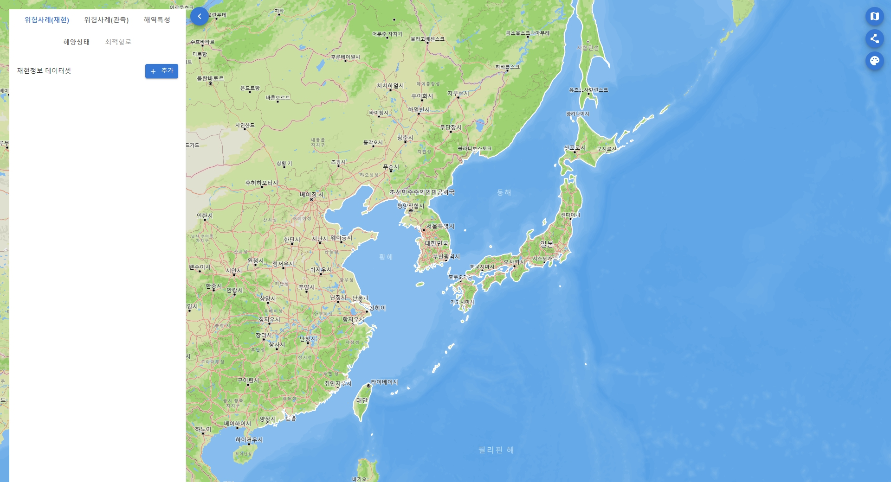

친환경전기선박 육상테스트베드용 해양정보시스템
목차
- 개요
- 주요 기능
- 데이터베이스 설계 및 벡엔드 API 서버 개발
- 다음 단계...
- 링크
1. 개요
개발 배경
- 친환경전기선박의 육상 테스트베드에서 선박의 거동모사모의에 활용될 과거 위험사례별 수치모델 기반의 해양환경정보와 다양한 해양공간정보를 먼저 정의하고 이를 수집하고 처리하여 데이터베이스에 적재했습니다.
- 하지만 이 데이터들이 제대로 DB에 적재되었는지 확인할 필요성과 선박 엔지니어들이 해당 데이터를 가지고 선박 거동모사에 활용할 수 있도록 시각적으로 확인하고 다운로드할 수 있는 플랫폼이 필요하다고 느끼고 프로젝트를 시작하게 되었습니다.
사용 스택 및 기술
- 프론트엔드 - React, Redux
- 지도 및 그래픽스 - Mapbox GL JS, Deck.gl, WebGL2, GLSL(OpenGL Shading Language)
- 벡엔드 - Python, FastAPI
- 데이터베이스 - PostgreSQL, PostGIS
- 배포 및 관리 - Docker, Docker Compose, Nginx, Traefik
Deck.gl 라이브러리 선택 이유
- Uber 사에서 만든 WebGL2 GPU-가속 렌더링 기반의 대용량 공간 데이터 시각화 프레임워크로서 Mapbox 및 Google Maps 등의 지도 라이브러리와 호환이 가능합니다.
- 또한, GeoJsonLayer, IconLayer, ScatterplotLayer 등 다양한 빌트인 레이어를 이미 제공하고 있으며, 문서화가 잘 되어있어서 WebGL2와 GLSL를 안다면 Custom 레이어 클래스를 직접 개발하여 활용 할 수 있었습니다.
2. 주요 기능
랜딩페이지
- Mapbox GL JS 기반의 지도 화면
랜딩페이지 CONT
- 다양한 스타일의 Mapbox 배경 지도 선택
랜딩페이지 CONT
- Natural Earth Data에서 다운로드 받은 다양한 해상도의 해안선 선택
랜딩페이지 CONT
- 친환경전기선박의 거동모사에 필요한 다양한 해양환경 및 공간정보를 확인할 수 있는 서랍 패널
- 위험사례 재현정보 - 태풍, 강풍, 폭우 등 과거 10년 간의 위험사례별 해양환경 재현정보(수치모델)
- 위험사례 관측정보 - 태풍, 강풍, 폭우 등 과거 10년 간의 위험사례별 해양환경 관측정보
- 해양상태정보 - 조석/조류 등 특이 해양 상태를 나타내는 정보
- 해역특성정보 - 선박밀집도, 사고이력 등 해양활동에 따른 해역특성과 관련된 해양공간정보
위험사례 재현정보
- 테이블 형태로 과거 위험사례별 수치모델기반의 재현정보 데이터셋 목록 조회 및 선택
위험사례 재현정보 CONT
- 활용가능한 적절한 Deck.gl 빌트인 레이어가 없어서 커스텀 레이어를 개발해 격자 그리드 형태의 대용량 래스터 데이터를 가시화
- 총 9개의 변수 별로 한 시간 간격 5일 이상의 기간으로 이뤄진 시공간 데이터셋에서 특정 시간 대의 해양의 수온 변수를 가시화한 화면
위험사례 재현정보 CONT
- 선택한 데이터셋 내 변수 및 시간 변경 가능
- 선택한 데이터셋 중에서 파랑의 파고 변수 데이터를 가시화한 화면
위험사례 재현정보 CONT
- 선택한 데이터셋 중에서 크기와 방향 정보를 가진 벡터 형태의 표층해류 변수 데이터를 추가로 가시화한 화면
- Deck.gl은 계층적 구조로 되어있어 여러 레이어를 동시에 시각화할 수 있습니다.
위험사례 재현정보 CONT
- 선택한 데이터셋 중에서 기상의 기온 변수 데이터를 가시화한 화면
위험사례 관측정보
- 테이블 형태의 과거 위험사례별 수집한 관측정보 목록 조회 및 선택
위험사례 관측정보 CONT
- Deck.gl이 제공하는 빌트인 레이어 중 하나인 GeoJsonLayer를 활용하여 경로에 따라서 변하는 태풍의 강도 별 가시화
- 마우스 Hovering을 통해 경로별 태풍의 상세 정보를 확인 가능
해양상태정보
- 테이블 형태의 특이 해양상태정보 목록 조회 및 선택
해양상태정보 CONT
- Deck.gl이 제공하는 빌트인 레이어 중 하나인 IconLayer를 활용하여 연간 관측된 최강 창·낙조류의 유향유속 정보 가시화
해양상태정보 CONT
- 마우스 Hovering을 통해 지점별 상세 조류관측 정보 확인 가능
- 데이터 필터링 및 크기 및 색상 변경 기능 개발
해역특성정보
- 트리 구조 형태의 다양한 해양공간정보 목록 조회 및 토글 온/오프 선택
- 쉽게 구분하기 위해 크게 사고, 항로 및 영역 별로 대분류
- 점, 선, 폴리곤 등 해역특성과 관련된 다양한 해양공간정보 가시화
3. 데이터베이스 설계 및 벡엔드 API 서버 개발
데이터베이스 설계
- 새로운 데이터 추가될 수 있음을 고려하여 크게 위험사례 재현정보, 위험사례 관측정보, 해양상태정보, 해역특성정보를 스키마로 분류
- cases_hindcasts 스키마 - 위험사례 재현정보
- cases_observations 스키마 - 위험사례 관측정보
- conditions_tidal_streams 스키마 - 해양상태정보
- characteristics_* 스키마 - 해역특성정보
데이터베이스 설계 CONT

- 이 중에서 위험사례 재현정보 스키마 & 테이블을 설계하는데 가장 많이 고민하고 많은 시간을 할애했습니다.
- 왜냐하면 우리가 수집한 과거 해양 및 대기환경 재현정보는 netCDF 파일 포맷의 수치모델의 결과로서 변수 별로 다차원 배열의 시공간적으로 변하는 데이터들이 들어있는 데이터셋이었습니다.
데이터베이스 설계 CONT
- 이러한 netCDF 파일의 특성을 고려하여 공간정보에 용이한 PostgreSQL과 PostGIS 확장자를 활용하여 테이블을 설계하고 Relations을 설정해 쿼리 시간을 최적화할 수 있었습니다.
벡엔드 API 서버 개발
- Python에 익숙한 개발자로서 API를 만들기 위해 Python 기반의 웹 프레임워크인 FastAPI를 활용했습니다.
- 문서화가 잘 되어 있어서 타 Python 기반의 웹 프레임워크보다 학습 비용이 낮다고 생각해 채택했습니다. 또한 자동 생성되는 API 문서화 도구인 Swagger를 통해 각 API 엔드포인트 별 확인이 가능하여 팀원들과의 공유가 원할할 것이라 생각했습니다.
4. 다음 단계...
기능 추가
- 내년에 목포에 친환경선박 기술 실증센터가 설립되면 선박 엔지니어들과 협력하여 거동모사에 필요한 데이터 포맷에 맞게 플랫폼으로부터 데이터를 다운로드하여 활용할 수 있도록 관련 벡엔드 및 프론트엔드 기능을 추가적으로 개발할 예정에 있습니다.
- 해양정보를 바탕으로 최적의 선박항로를 산출하는 기능을 개발할 예정에 있습니다.
5. 링크
GitHub 링크를 첨부했습니다.